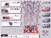
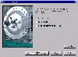
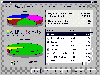

|
|
| 当前位置：电脑报电子版 > 1999 年 > 41 期 > 软件世界 > 全能工具箱——Nuts＆Bolts |
| 《 全能工具箱——Nuts＆Bolts 》 |
| 我们现在面对着一个异彩纷呈的软件世界，但有时候在大量的工具光盘中寻找自己所需要的工具软件，会感觉到麻烦。所以大家都喜欢有一个全能的工具箱，如Norton
Utillites（诺顿工具箱）。这里就介绍另外一个全能的工具箱软件——Nuts＆Bolts（以下简称N＆B，图1）。这是由著名的NAI公司(美国网络联盟公司，由McAfee
Associates与Network General McAFee合并组成)出品的共享工具软件包，包含十余种实用的工具，可以和诺顿工具箱媲美。下面就择其精华向朋友们介绍一下。
一、Registry Wizard——维护注册表< 对于一个普通的计算机用户而言，维护注册表是件很麻烦而且还有一定危险性的事，微软曾经专门推出了一款简单易用的注册表维护工具—RegClean，深受不少朋友的喜爱，而笔者觉得Registry Wizard与RegClean相比要更好一些。它提供了四种针对注册表的维护手段：●“Backup＆Restore”，备份注册表。一旦将来注册表出现问题，可用来进行恢复。 ●“Clean”，清除注册表中无用的信息。 ●“Repair”，修理注册表中错误的数据。比如清除注册表中残留的已卸载软件的注册信息。 ●“Tune─up”，优化并整理注册表。经常的安装和卸载软件，会使得注册表中的内容变得非常凌乱，该功能可以优化并调整注册表，从而提高了系统的稳定性。 二、Stronghold——保护你的秘密 Stronghold的作用就是为文件设置密码（图2），从而更有效地保护文件，在它的主界面上共计有三个选项。●“Encrypt a File”，加密文件。 ●“Decrypt a File”，解密文件。 ●“Build self Decrypting Executable”，建立可执行的自解密文件。 其中的第三项尤其有实用价值，用它可以建立一个可执行的解密文件，只需直接执行，然后根据提示输入正确的密码即可。 三、Disk Minder——检测和修理磁盘 Disk Minder的作用是安全、快速地检测和修理磁盘中存在的错误，其检测的范围包括引导扇区、分区表、文件分配表、目录结构、磁盘表面等，较之Windows自带的磁盘扫描工具，Disk Minder有如下一些优点：●Disk Minder对分区表和引导扇区所存在的问题有着更强地修复能力，使用上也很安全。 ●Disk Minder的检测速度快，比起磁盘扫描工具，它可以为用户节约近一半的时间。 Disk Minder的设置选项： ●“Check Entire Disk Surface for Reads”，指定检测的范围包括磁盘表面。 ●“Disk Minder”，校验磁盘表面是否存在物理损坏。 ●“Fix Errors Automatically Using Default Values”，针对初学者或者想节约时间的用户，自动修理检测过程中所发现的问题。 四、File Shredder——彻底删除文件 当我们删除文件之后，其实文件的内容并没有真正从磁盘上消失，只是该文件所占用的磁盘空间被标识为可用，这样对于重要或者绝对保密的资料而言，可能就会留下一些隐患。File Shredder的作用就是彻底地、全面地删除文件。在它的界面上有两个功能选项：●Select a File to Erase，清除文件。 ●Erase Non－File Data，清除数据。 第二项是针对那些已经使用“Delete”命令删去，甚至已被部分覆盖的数据而言的，将它们删去，从而更有效的起到了保密的作用。 其实当N＆B安装之后，桌面上会新建一个名称是“Helix File Shredder”的图标（图3），由于N＆B支持拖拽技术，所以可以直接经由资源管理器将待删除的文件拖动到该图标处，从而同样达到彻底删除文件的目的。 五、Cleanup——清扫你的磁盘 Cleanup的责任就是为你清除磁盘垃圾，从而腾出更多的自由空间给用户使用，Cleanup的清除方式有两种：●“Express Mode Cleanup”，快速模式。 ●“Custom Mode Cleanup”，自定义模式。 其中的第一种方式可为用户快速找出具有特征扩展名以及一些特殊文件夹中的垃圾文件，具体的文件类型，用户可以通过点击界面右下方的“Properties”按钮来设置。第二种自定义清除方式的功能就更强大了，它能够清除重复的文件、超过一定大小的文件（具体大小由用户设定）、过时的文件（即在某一时间之前建立的文件）、孤立的文件等等。 六、Image——为硬盘“拍照” Image是一个磁盘信息记录工具，可以将磁盘的引导扇区、分区表、文件分配表等一些重要信息以文件的形式保存在磁盘上，以备将来恢复系统时使用，而且该文件采用了特殊的存储形式，所以不会受到病毒等的损坏。 从名称就可以看出，这是一个检测系统资源使用情况的工具（图4），由它的界面用户能够即时的了解当前内存的使用情况、虚拟内存的大小、CPU的占用率、磁盘剩余空间等一些详细资料，为用户更好地使用和运行系统提供了帮助。八、EZ Setup——改变系统的“外表” EZ Setup的作用是改变Windows系统的“外表”，即桌面、图标、系统启动时所加载的程序、各种菜单的组成方式、启动和关闭画面等，虽然其中有些项目可以经由控制面板来设置，但EZ Setup涉及的面更周全，而且使用也相当简便。九、Discover——显示系统信息 Discover是一个系统信息检测工具（图5），检测的范围包括了CPU的类型，内存、硬盘、各接口的状态、驻留程序所消耗的内存大小等情况，并可与N＆B内置的标准资料作比较。由于提供了极其丰富的图示，所以即便你是一位初学者，也能一目了然。以上对N＆B的一些主要功能进行了介绍，其实还不止这些，如果朋友们感兴趣，可以通过网址http:∥wwwnaicom或http:∥wwwhelixsoftcom获取最新信息。 (江苏 丁华) |
| 下载本期推荐软件 | 页 首 |
| 《电脑报》版权所有，电脑报网站编辑部设计制作发布 |
{kind=link}